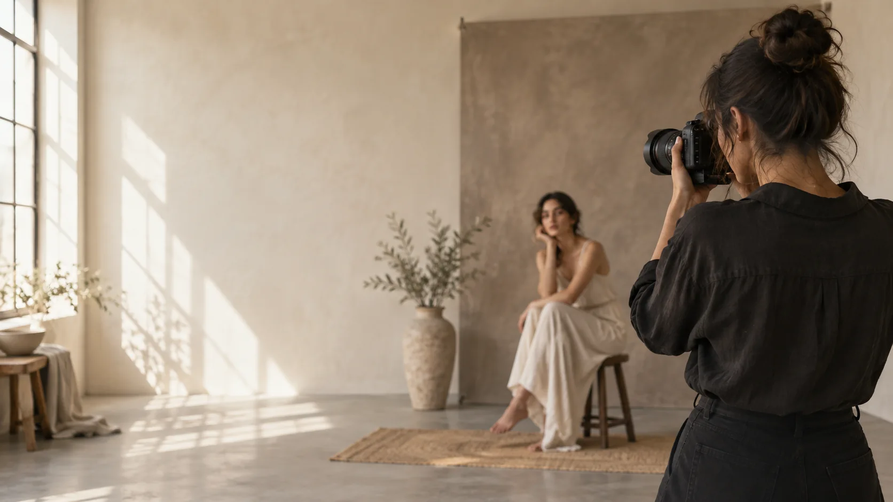

Retratos
Tu esencia, tu mirada, tu historia.

FOTOGRAFÍA · BUCARAMANGA
Fotografía que captura emociones, historias y momentos únicos.
BIENVENIDA
Creo imágenes que se sienten tan reales como el instante en que nacieron. Cada sesión es un espacio para conectar, observar y contar una historia propia.
Conoce mi enfoqueLO QUE HAGO
Desde momentos íntimos hasta grandes celebraciones, busco la luz y los detalles que hacen única cada historia.
Tu esencia, tu mirada, tu historia.
Recuerdos espontáneos que permanecen.
El amor cotidiano en imágenes honestas.
Ideas que se transforman en imágenes.
UNA MIRADA AL PORTAFOLIO
POR QUÉ TRABAJAR CONMIGO
Primero conozco tu idea, tus gustos y lo que deseas recordar.
Cuido la luz, los gestos y los detalles que cuentan lo esencial.
Te acompaño desde la planeación hasta la selección final de imágenes.
EMPECEMOS